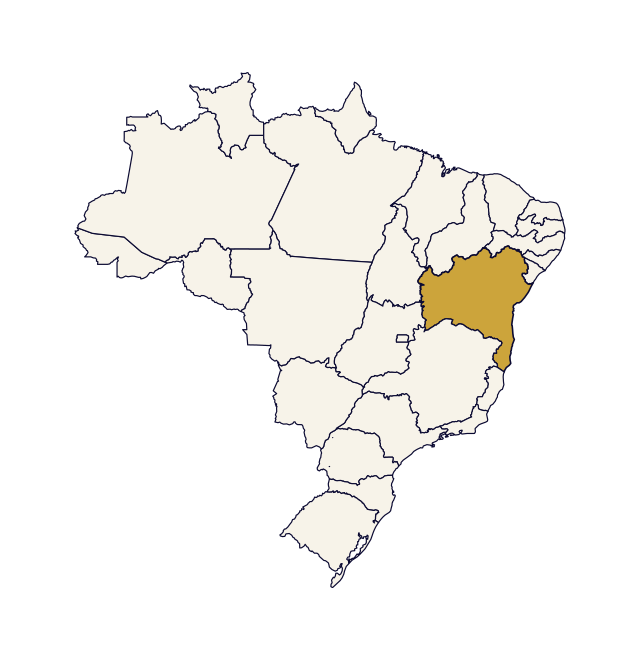

O próximo destino
está nas pistas.
Preparando seu caso…
Organizando a rota e as pistas da investigação.
NOVO CASO
Uma peça histórica desapareceu.
- Suspeito
- Aparência
- Motivação
INVESTIGAÇÃO
Bahia
Converse com os moradores e descubra o próximo destino.

Quem você vai ouvir?
Uma nova pista.
Pista salva na caderneta · Conversa: −2h
Suas pistas, reunidas.
Use o que você descobriu para decidir o próximo destino.
Para onde seguimos?
Saindo de
Escolha um estado para embarcar.
Destino correto: −8h · Destino errado: −12h
Caso encerrado!
0pontos
0estados visitados
0hrestantes
Detalhes da investigação
Viagens certas 0Erros de viagem 0Pistas coletadas 0Tempo real 0m 0s